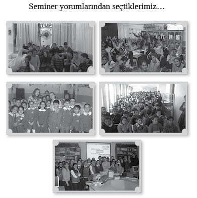

BÖLÜM 9
Seminer yorumlarından seçtiklerimiz…

Ben bir Afganistanlıyım. Ülkemi bugünkü durumundan nasıl kurtarırım diye geceleri hep düşünürdüm. Sizinle bugünkü konuşmamızla çok şey öğrendim. Teşekkürler.
Abdulhamad Aziz
Ömer Kaşif Yetiştirme Yurdu
Ben “hayır” demeyi seven bir insanım. Bu seminerden sonra bazı şeylere “evet” diyebileceğimi düşünüyorum. Örneğin babamla barışmayı deneyebilirim.
Aslıhan Asiye Özdemir
İzmir Buca Kız Yetiştirme Yurdu
Hayata farklı açıdan bakmamı sağladı. Özgürce düşünüp belli bir kalıba göre hareket etmemeyi öğretti bana. Hayattaki küçük ayrıntıları kaçırmayıp o ayrıntılarla mutlu olmayı öğretti. Bazı konularla başa çıkamayınca tarihten örneklere bakarak sorunu çözmeme yardımcı oldu.
Dilek Gülez
Niğde İmam Hatip Lisesi
Şerif Amca’nın evde çocukları ile oynadığı bir oyun varmış.: Şöyleymiş: Önce iki kişi birbirine bakıyor. Sonra gülmemeye çalışıyorlar ve gülen yanıyor. Şerif Amca, aslında gülenin kazandığını söyledi. Bence her zaman güler yüzlü olmamız için söyledi.
Şerif Amca’ya teşekkür ediyor, sevgilerimi yolluyorum…
Irmak Kalaycı
ODTÜ İlköğretim Okulu
Özgüvenin önemini, hayatta öğrenilecek çok şey olduğunu öğrendim. İnsanlarla daha çok iletişim içinde daha yararlı olacağıma karar verdim. Ayrıca hayatta her şeyin zenginlik, para olmadığını anladım.
Hatip Yılmaz
İzmir Torbalı K-2 Cezaevi
Harika bir “uyandırma servisi.” Günlük telaşlara dalıp günleri, haftaları, yılları boşa harcıyoruz. Hayatı boş, anlamsız geçirmemek adına kendimize gelmemizi sağlayan fevkalade bir “bookmark” oldu yeni yılda.
Burçak Öztekin
Ankara AB Delegasyonu
Bence bu seminer bütün okullarda verilmeli. Bu seminerde dünyaya gülen gözlerle bakmayı ve yanlış yollara gitmemeyi öğrendim.
Gizem Alkoç
Tarsus Atatürk İlköğretim Okulu
Üniversite hayatım boyunca birçok seminere katıldım fakat bu kadar huzur verenine ve dinlendirici olanına ilk kez rastladım.
Numan Bademli
Hacettepe Üniversitesi
Bu seminer benim hayatımı değiştirdi. Hayatım boyunca unutamayacağım.
Muhammet Turan
Çok etkileyiciydi. Bildiklerimi yapma cesareti hissettim kendimde. Bazen insan hayatta olan şeyleri tekrar görüp tekrar düşünür. İzlemek, konuşmak harikaydı.
Kübra Acır
Ankara Sincan Lisesi
Sizin gibi insanları bulmak çok zor. Ama bu çizgiyi takip edeceğim. Dürüst olmaya devam edeceğim. Dünyada iyiler kalmasa da, sizin gibi insanlar sayesinde yeniden hayata tutunmaya çalışacağım. Hayatımda gördüğüm en güzel seminerdi.
Ömer Kırbıyık
Kayseri Kapalı Cezaevi
Gerçekten unutulmuş güzel ve canlı tarihimizin, yok olmaya yüz tutmuş dünyanın en hoşgörülü kültürümüzün hatırlanması ve çevremizde olan bitenlerin olumsuzluklarına değil de olumlu yanlarına bakabilmemiz adına, gerek konu gerek örnekler açısından son derece mükemmel bir seminer. Seminerin düzenlenmesinde emeği geçen herkese sonsuz teşekkürler...
Sıddık Yalçın
Niğde Fatih Anadolu Lisesi
Seminerde anlatılanları göz önünde bulundurarak, bugün eve gittiğimde kendi yaşamımı değerlendireceğim. Hayatımdaki olaylardaki ailemin etkisini tartışacağım.
Büşra Keser
Ankara Esenevler Anadolu Lisesi
Umutsuzluğun var olduğu bir yerde, bizlere umutsuz kalınmayacağını hatırlatıp umutsuzluk köyüne gitmektense, umut köyüne gitmemizi hatırlattı.
Hüseyin Dalmaz
Kayseri Kapalı Cezaevi
Arkadaşlarımızı yarı yolda bırakmamalıyız, şikayetçi olmamalıyız. Hayatımızdan memnun olmalıyız.
Sebahat Kara
İzmir Adem Dertsiz Çocuk Yuvası